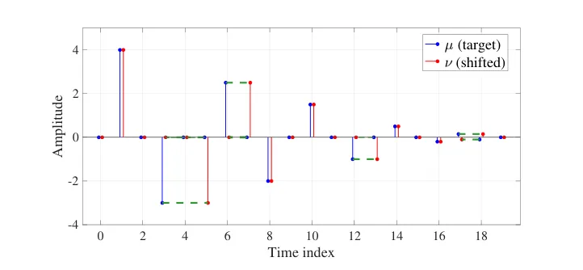
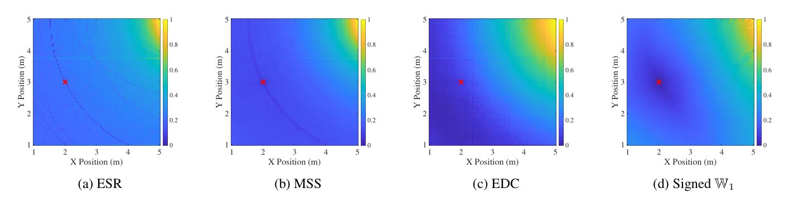

O Problema da Similaridade em Acústica de Salas
Avaliar a similaridade entre sinais de áudio, especificamente as Respostas de Impulso de Sala (RIRs), é um desafio fundamental no processamento de sinais de áudio. Uma RIR descreve como o som se propaga em um espaço fechado, capturando a interação complexa entre reflexões e relações de fase. Esses sinais são caracterizados por serem esparsos, variam rapidamente e possuem uma estrutura temporal altamente específica: picos de reflexão precoce seguidos por uma cauda reverberante.
O problema central é que pequenas variações nos parâmetros da sala ou na posição da fonte de som podem levar a grandes desvios na identificação do ambiente acústico alvo. Métricas convencionais de ponto a ponto, como as perdas Lp (L1 ou L2), tornam-se pouco informativas quando as reflexões correspondentes estão desalinhadas temporalmente. Isso ocorre porque essas métricas exigem uma correspondência um-para-um estrita entre amostras, penalizando severamente erros locais mesmo que a estrutura global do sinal esteja correta.
Essa sensibilidade a deslocamentos temporais cria superfícies de perda (loss surfaces) ruins para tarefas de otimização. Em aplicações como estimação de RIR, interpolação ou otimização de modelos paramétricos de reverberação, a escolha da medida de similaridade é crítica. Se a métrica não for robusta, o processo de otimização pode convergir para mínimos locais ou falhar em encontrar a configuração de parâmetros que melhor reproduz a acústica desejada.
Transporte Ótimo como Solução Geométrica
O Transporte Ótimo (Optimal Transport - OT) oferece um framework natural para resolver esse problema. Diferente das métricas pontuais, o OT compara distribuições de probabilidade considerando como a massa de uma distribuição deve ser deslocada para se tornar outra. Em vez de exigir que cada amostra do sinal original corresponda exatamente à mesma amostra no sinal alvo, o OT permite encontrar o plano de transporte mais eficiente que move a energia do sinal fonte para o sinal alvo.
Essa abordagem é particularmente benéfica para sinais de áudio, pois captura a estrutura geométrica do sinal. Trabalhos anteriores já demonstraram que o OT é útil para comparação de áudio e pode servir como função de perda em frameworks de aprendizado profundo. A ideia é que, ao considerar o deslocamento das distribuições subjacentes, o método se torna robusto a pequenas variações temporais e fase, que são comuns em sinais de RIR.
Os autores deste paper destacam uma conexão interessante e não explícita anteriormente na literatura: a distância L1 entre Curvas de Decaimento de Energia (EDCs) de uma RIR é exatamente equivalente à distância Wasserstein-1 das suas distribuições de energia temporal, sob normalização adequada. Isso mostra que o OT já está implicitamente presente em medidas estabelecidas na acústica de salas, mas a representação via EDC descarta informações cruciais da estrutura assinada do sinal original.

A Limitação do Wasserstein Convencional e a Proposta Assinada
Apesar da utilidade do transporte ótimo, a formulação clássica da distância Wasserstein-1 assume que as medidas são não-negativas. Isso é um obstáculo direto para RIRs, que são sinais assinados, contendo picos tanto positivos quanto negativos devido à natureza oscilatória das ondas sonoras. Aplicar o Wasserstein convencional diretamente ao sinal bruto não é possível sem perder ou distorcer essa informação crítica.
Para contornar isso, os autores propõem o uso da distância de Wasserstein Assinada (Signed Wasserstein Distance). Esta formulação permite definir um problema de transporte diretamente sobre os sinais brutos de RIR, preservando a distinção entre componentes positivas e negativas. O objetivo é avaliar a similaridade diretamente usando as reflexões assinadas, o que não seria viável com a formulação padrão.
Essa abordagem mantém a comparação não-local característica das distâncias baseadas em EDCs, mas recupera a riqueza de informações do sinal temporal original. Ao operar nos picos positivos e negativos, o método consegue alinhar reflexões específicas mesmo quando há pequenos desalinhamentos temporais, algo que métricas pontuais falham em fazer de forma eficaz.
Equivalência Teórica: EDCs e Wasserstein-1
Um dos contribuições teóricas importantes do paper é estabelecer formalmente a equivalência entre uma métrica clássica da acústica e o transporte ótimo. Os autores demonstram que, sob normalização de energia total igual, a distância L1 entre as Curvas de Decaimento de Energia (EDCs) é matematicamente equivalente à distância Wasserstein-1 entre as distribuições temporais de energia correspondentes.
A EDC é uma representação comum que resume a energia acústica ao longo do tempo, ignorando a fase e a assinatura positiva/negativa do sinal. Ao provar essa equivalência, os autores mostram que o OT já está intimamente relacionado a distâncias baseadas em energia amplamente utilizadas. No entanto, eles argumentam que a representação EDC limita as características do sinal disponíveis para avaliação de similaridade, pois descarta a estrutura assinada.
Portanto, a proposta de usar o Wasserstein Assinado é uma generalização que busca capturar mais informações do que a EDC oferece, sem perder as propriedades de robustez geométrica do transporte ótimo. Isso permite uma avaliação de similaridade mais rica e informativa para tarefas de otimização de parâmetros acústicos.
Avaliação Experimental: Robustez a Perturbações
Os autores avaliaram a distância proposta contra métricas de áudio de linha de base comuns através de uma série de estudos de perturbação de parâmetros da sala. O objetivo era verificar a robustez da métrica em cenários onde a similaridade deve ser mantida apesar de variações controladas nas condições acústicas.
Um dos experimentos focou na robustez da posição da fonte. A fonte de teste foi movida sobre uma grade retangular de posições em torno do valor alvo, enquanto a altura foi mantida fixa. O desempenho das diferentes funções de perda foi medido em uma escala normalizada entre 0 e 1. A ideia era ver quão bem cada métrica conseguia identificar a similaridade mesmo quando a fonte se deslocava ligeiramente, simulando erros de localização ou incertezas na configuração experimental.

Otimização de Parâmetros de Sala
Além dos estudos de perturbação, a distância Signed Wasserstein foi utilizada como função de perda para a otimização de coeficientes de absorção e dimensões da sala em um Modelo de Fontes de Imagem (Image-Source Model) diferenciável. O Modelo de Fontes de Imagem é uma técnica comum para simular a propagação do som em salas, calculando as reflexões diretas e especulares.
Ao usar a nova métrica como objetivo de otimização, os autores buscaram ajustar os parâmetros geométricos e materiais da sala para que a RIR simulada se aproximasse da RIR alvo. A qualidade da otimização foi medida pelo erro final nos parâmetros recuperados. A expectativa era que a superfície de perda mais suave e informativa do Wasserstein Assinado levasse a uma convergência mais precisa e estável.
Resultados e Análise
Os resultados demonstraram a vantagem da métrica Signed Wasserstein para tarefas de avaliação geométrica. Nos estudos de perturbação, a métrica mostrou-se mais robusta às variações de posição da fonte em comparação com as métricas de linha de base. Isso indica que o transporte ótimo consegue manter uma noção de similaridade mais consistente mesmo quando há deslocamentos temporais nas reflexões.
Na tarefa de otimização de parâmetros, a métrica Signed W1 obteve os menores erros de otimização. Isso confirma que a métrica fornece uma superfície de perda mais suave e informativa. A capacidade de alinhar estruturas não-locais do sinal, em vez de penalizar desalinhamentos pontuais, permite que o otimizador encontre soluções mais precisas.
Limitações e Considerações Finais
Apesar dos resultados promissores, é importante notar o escopo do estudo. A avaliação foi realizada em cenários controlados de perturbação de parâmetros e otimização em um modelo específico (Image-Source). A generalização para outros tipos de sinais de áudio ou ambientes mais complexos com múltiplas fontes e difusão não foi explorada em detalhes neste paper.
Além disso, a computação da distância de transporte ótimo pode ser computacionalmente intensiva para sinais de alta resolução temporal, embora a formulação proposta busque eficiência. A necessidade de normalização de energia total também é um passo prévio que deve ser considerado na aplicação prática da métrica.
Em conclusão, o paper apresenta uma métrica de similaridade inovadora para RIRs que supera as limitações das métricas pontuais tradicionais ao incorporar a estrutura assinada dos sinais. A equivalência teórica com a distância Wasserstein-1 das EDCs fornece uma base sólida, e os resultados experimentais validam a utilidade da abordagem para otimização acústica e avaliação geométrica. A proposta abre caminho para métodos mais robustos em processamento de áudio e acústica de salas.
O que fica
- Métricas pontuais (L1/L2) falham em RIRs devido à sensibilidade a desalinhamentos temporais nas reflexões.
- O Transporte Ótimo permite comparar distribuições considerando deslocamentos geométricos, sendo robusto a variações.
- A distância Wasserstein-1 clássica não se aplica a sinais assinados; os autores propõem a versão 'Signed' para RIRs.
- A métrica proposta melhora a otimização de parâmetros acústicos ao fornecer superfícies de perda mais suaves e informativas.
Paper original: Signed Wasserstein distance for room impulse response comparison
Comentários
Nenhum comentário ainda. Seja o primeiro.